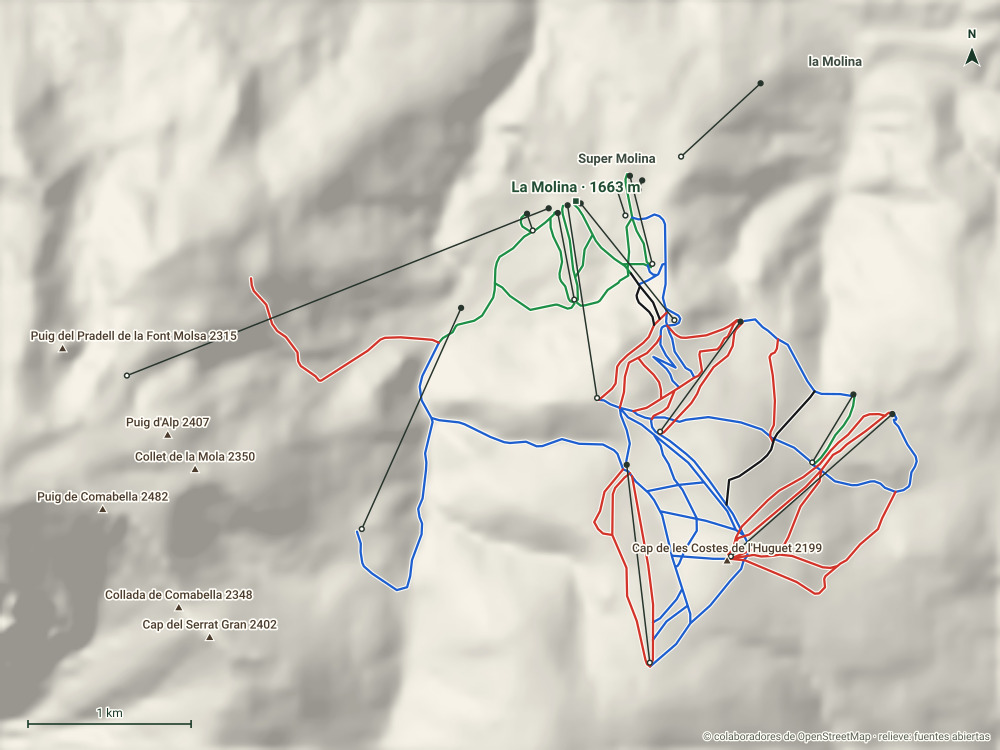

La Molina
La Cerdanya · Girona
- Pistas
- 39 km
- 63 trazados
- Cota máxima
- 2347 m
- mínima 1590 m
- Desnivel
- 757 m
- esquiable
- Remontes
- 14
- 1 telecab. · 9 telesillas
Aquí se instaló en 1943 el primer remonte de España. Estación de la Cerdanya unida con Masella a través de la Tosa d’Alp.
Hoy
La Molina ahora mismo
Estado de pistas y remontes según el último parte publicado, y las webcams de la estación.
Webcams
Estado y webcams de Infonieve.es, a partir de los partes y cámaras de cada estación. Antes de salir, confírmalo en la web oficial.
Próximos 7 días
Nieve y tiempo previstos
Previsión para la cota alta (2347 m) y la base (1590 m).
Previsión de modelos meteorológicos de Open-Meteo (CC BY 4.0). Es previsión, no observación: lo que hay abierto hoy está en el estado de pistas.
Plano
Plano de pistas
Pasa el cursor o toca una pista o un remonte para ver su nombre, longitud y desnivel.
Trazados: © colaboradores de OpenStreetMap (ODbL). No es el plano oficial de la estación ni refleja aperturas.
Mapa 3D
La Molina en tres dimensiones
Relieve real, fotografía aérea, sol y sombras, viento e inclinación. Se carga solo cuando lo pides porque pesa.
Pantalla completa
Recomendado con wifi. En móvil, el mapa completo va mejor en la app.
Pistas
63 pistas, 39 km
La más larga con nombre es Volta Muntanya Sagrada (1,8 km, azul).
VerdeMuy fácil
11 pistas · 5,9 km
Ver nombres
- Esquirols 0,8 km
- Trampolí 0,6 km
- Pista Llarga 0,6 km
- Prat Agre 0,6 km
- Fontcanaleta 0,6 km
- Club 0,6 km
- Pedró 0,5 km
- Moixernons 0,3 km
AzulFácil
31 pistas · 16,6 km
Ver nombres
- Volta Muntanya Sagrada 1,8 km
- La Genciana 1,6 km
- Comabella 1,6 km
- Ponent 1,1 km
- Corriol 0,8 km
- Quatre Camins 0,6 km
- Llevant 0,6 km
- Coll Sisé 0,5 km
- Pleta 0,5 km
- Camí del Bosc 0,4 km
- 39- Passeig 0,4 km
- Torrent Negre 0,4 km
- Mainadera I 0,4 km
- La Diagonal 0,3 km
- Agulles 0,3 km
- Passeig 0,3 km
RojaIntermedia
18 pistas · 15 km
Ver nombres
- Olímpica 1,6 km
- Alabaus 1,4 km
- Clot de l'Hospital 1,4 km
- Pastors 1,4 km
- Carena 1,3 km
- Solell 1,2 km
- Roc Blanc 0,9 km
- L'Huguet 0,7 km
- Comella I 0,7 km
- Creueta 0,7 km
- Sitjar 0,7 km
- Costa Rasa 0,6 km
- Comella II 0,5 km
- Telemark 0,5 km
- Moixeres 0,5 km
- Diagonal Alta 0,3 km
NegraDifícil
3 pistas · 1,5 km
Ver nombres
- Els Coms 0,9 km
- Estadi II 0,3 km
- Estadi I 0,3 km
Remontes
14 remontes
El de mayor desnivel: TCB Cadí-Moixeró, 690 m.
| Remonte | Tipo | Longitud | Desnivel | Llegada |
|---|---|---|---|---|
| TCB Cadí-Moixeró | Telecabina | 2782 m | 690 m | 2347 m |
| TSD Cap de Comella | Telesilla | 1196 m | 414 m | 2076 m |
| TSD Alabaus | Telesilla | 1320 m | 369 m | 2196 m |
| TSC El Llac | Telesilla | 1485 m | 327 m | 2030 m |
| TSC Roc Blanc | Telesilla | 836 m | 306 m | 2059 m |
| TSC Torrent Negre | Telesilla | 1222 m | 253 m | 2273 m |
| TSC Fontcanaleta | Telesilla | 919 m | 203 m | 1865 m |
| Telesilla Turó de la Perdiu | Telesilla | 662 m | 127 m | 1717 m |
| TQ Pedró | Telesquí | 486 m | 119 m | 1948 m |
| TSC Trampolí | Telesilla | 540 m | 99 m | 1761 m |
| TSC Pista Llarga | Telesilla | 557 m | 78 m | 1757 m |
| CT Debutants | Cinta | 167 m | 19 m | 1705 m |
| CT Johan Cruyff | Cinta | 109 m | 18 m | 1670 m |
| CT Pista Llarga | Cinta | 61 m | 4 m | 1684 m |
Longitud en planta y desnivel sobre el modelo de relieve. No incluye horarios ni estado de apertura.
Guía práctica
Antes de ir a La Molina
Cómo llegar
La Cerdanya, Girona. Coordenadas del dominio: 42,3239, 1,9434.
Ver en OpenStreetMap · Cómo llegar en coche
En invierno comprueba el estado de la carretera y si hacen falta cadenas.
El terreno
- Base: La Molina, 1663 m
- la Tosa, 2536 m
- Mirador de la Tosa, 2526 m
- Puig de Comabella, 2482 m
- Tossa de Das, 2446 m
- Núcleos: Masella, la Molina, Super Molina
Enlaces oficiales
Forfaits, horarios y aperturas cambian durante la temporada: los publica la estación.
La Molina sin cobertura
Descarga este mapa en la app para Android y úsalo en pistas aunque no haya red.